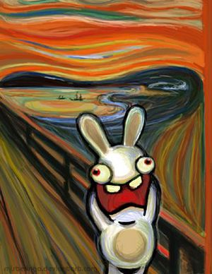
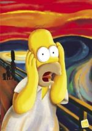

El grito (cuadro)
 De: La Frikipedia, la enciclopedia extremadamente seria.
De: La Frikipedia, la enciclopedia extremadamente seria.
El grito es un cuadro que un loco puesto de LSD pintó hace unos años en el que un extraterrestre intenta imitar a Macauly Culkin en Solo en Casa.
Robo del cuadro
El primero de dos intentos de robar el cuadro fue efectuado por el Pato Donald, quien como veremos fracasó miserablemente.
Plan del Pato Donald
 Primer boceto del cuadro. El resultado no convenció a Munch
El plan del Pato Donald se componía 10 simples pasos:
- Distraer a los guardias con un hueso de hule.
- Cortar la luz del museo para desconectar los sistemas de seguridad.
- Entrar por la ventilación.
- Bajar colgado de una soga de espía (aunque no hay rayos laser debido al corte de luz, siempre es bueno hacer esto, le da un estilo "misión imposible").
- Activar la canción de misión imposible en el iPod.
- Atrapar la gota de sudor.
- Respirar profundamente y con todo el cuidado del mundo agarrar el cuadro.
- Gritar "YES!!!".
- Subir por la cuerda.
- Escapar del lugar.
Plan de Pepito Piscinas
Este plan muy elaborado fue arruinado ya que para el paso 6 a Pepito Piscinas se le había ocurrido robar el cuadro. El plan de Pepito era simple: ligarse a la vigilanta. El éxito fue rotundo. Algunos dicen que lo hizo para completar su colección de objetos invaluables, otros para venderlo y pulirse la pasta en putas.
Reemplazo del cuadro
 El cuadro que tuvieron que poner en lugar del original desde su robo
Inmediatamente se supo la noticia del robo, ya muchos pintores quisieron poner una copia del cuadro hecha por ellos a cambio de una pizca de fama (pobres diablos sin imaginación).
Se rumorea que quien hizo el cuadro ganador pertenece a la religión Simpson.
Inútiles que intentaron robar del cuadro reemplazado
Actualmente, el cuadro esta protegido en un museo de alta seguridad ya que posee poderes sobrenaturales que permitirán al dueño dominar el mundo. Sabidas son las veces en que los señores de la guerra han querido cambiarlo de lugar para usar su poder. Estos son unos pocos que lo han intentado:
Teorías
Hay muchas teorías de por que se pinto el cuadro con un extraterrestre gritando. La mas acertada es que esta intentando imitar a Macauly Culkin, pero aqui hay un listado de otras posibles teorías:
- El extraterrestre fue asustado por una cosa extraña, algo tan horrible que Satanás II le pidio al Ciber Jesús (que resistió mas ante la cosa) que se le apareciera al pintor y le rogara que quitara "la cosa".
- El pintor intento pintar al gilipollas gritando cuando se miro al espejo y se suicidó en defensa propia.
- El pintor trataba de dibujarte a ti.
- El pintor estaba tratando de inmortalizarse al sacar su primera nota 2.0(F).
- Existe la posibilidad (1 entre 1000x1000000^100000000) de que al pintor se le derramo la pintura sobre un cuadro en blanco y salio eso.
¿Sabías que...
- ...el grito es una pintura y no un grito?
- ...Link grita?
- ...el grito no deja de gritar?
- ...Ned Flanders grita como niña?
- ...lo mas cercano a un grito en el messenller es un zumbido?
- ...no me gustan los gritos del messenller?
- ...Cervantes gritó cuando le cortaron la mano?
- ...Van Gogh no lo hizo al cortarse la oreja?
Autor(es):
- Nexo
- Frikiman
- Epikurolibre
- Roms
- Viento
- Khazike Khashondo
- Nadaquever
- Kamilah
- Odfens
- Hasle
Frikipedia 2005-2016, Licencia
GFDL 1.2 - Extraído por FrikiLeaks